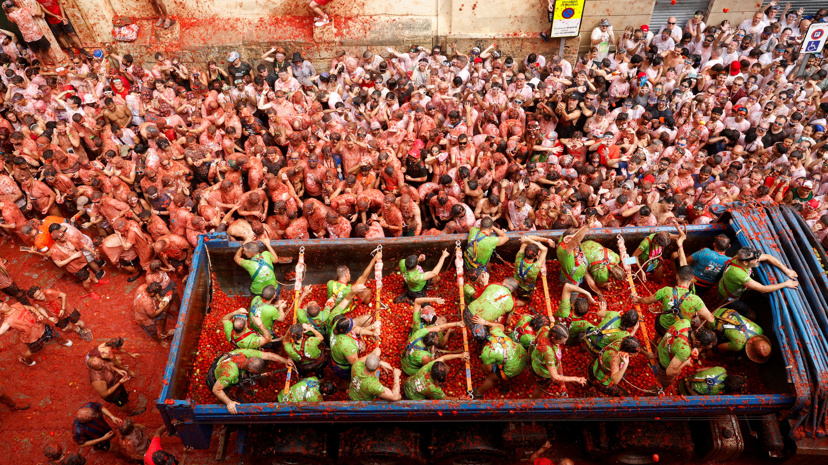

La Tomatina
La Tomatina est une fête traditionnelle organisée chaque année dans la ville de Buñol,
près de Valence.
Cet événement est particulièrement connu pour sa gigantesque
bataille
de tomates, durant laquelle des milliers de participants se rassemblent dans les rues.
Cette célébration attire des visiteurs du monde entier et offre une expérience unique et
amusante.
Regarez si-dessous une vidéo de la vrai Tomatina!